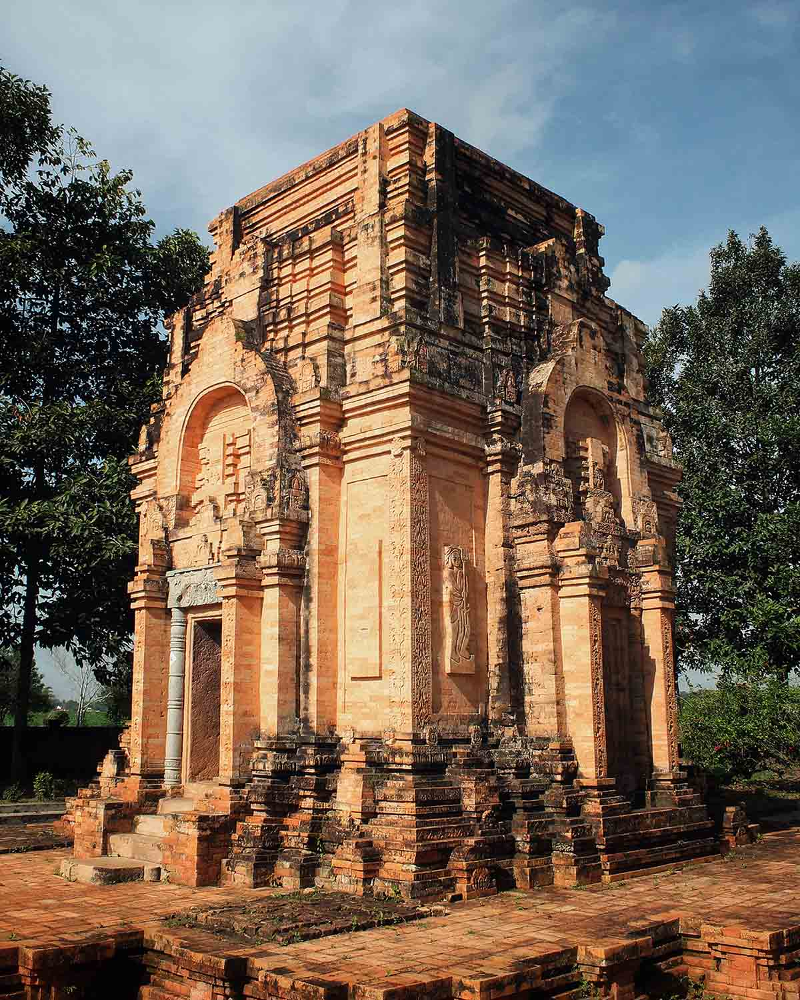
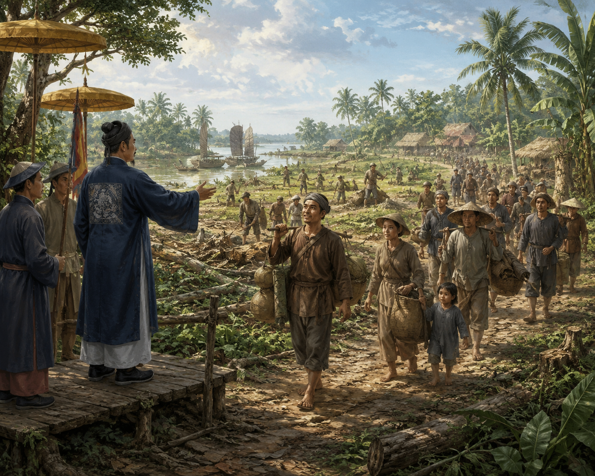
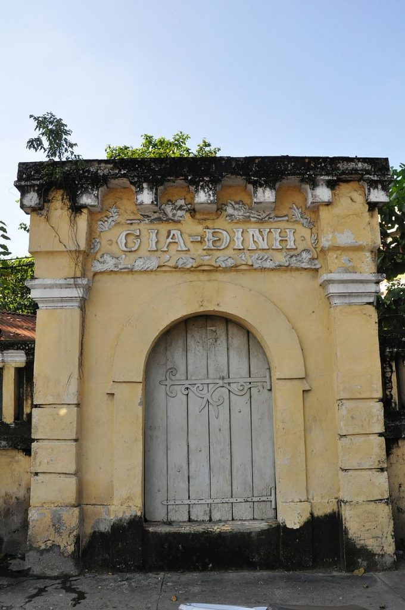
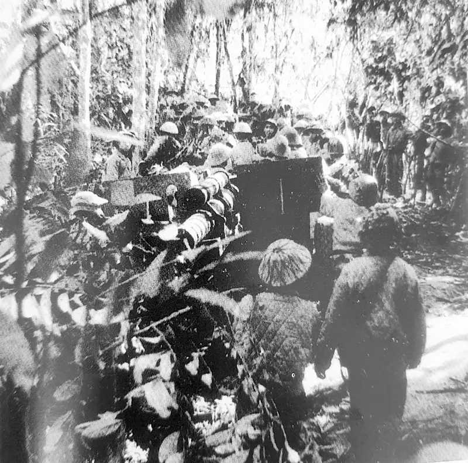
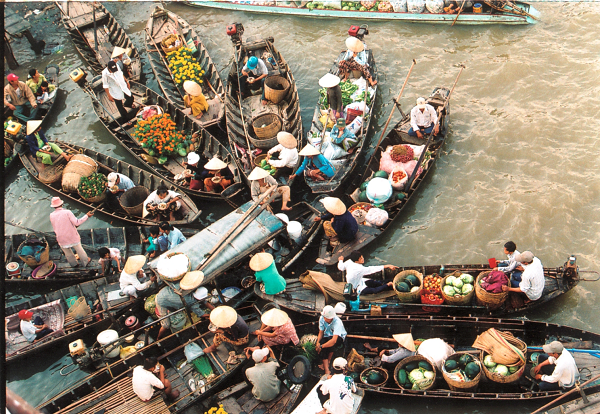
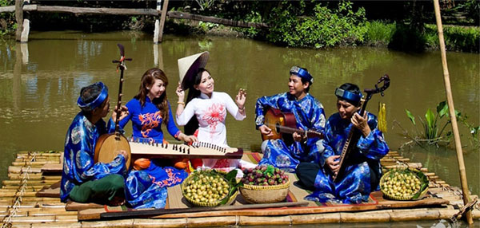
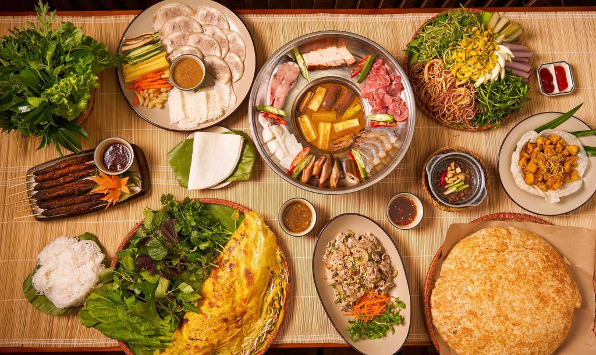

Khám phá dòng chảy lịch sử thăng trầm và nét đẹp văn hóa đặc sắc của miền đất Tây Nam Bộ. Một bức tranh đời sống muôn màu làm say đắm lòng người.

Từ thế kỷ I đến thế kỷ VII, vùng đất Nam Bộ là địa bàn hình thành và phát triển của Vương quốc cổ Phù Nam cùng nền văn hóa Óc Eo. Các di chỉ khảo cổ tại Óc Eo (An Giang) chứng minh đây từng là trung tâm thương mại, giao thương hàng hải quốc tế quan trọng kết nối các nền văn minh lớn như Ấn Độ và La Mã. Nền kinh tế Phù Nam phát triển rực rỡ dựa trên nông nghiệp lúa nước kết hợp thương nghiệp biển sầm uất, với hệ thống kênh rạch chằng chịt vừa để dẫn nước vừa làm lộ trình giao thương. Cư dân Óc Eo có đời sống tinh thần phong phú, chịu ảnh hưởng sâu sắc của Phật giáo và Hindu giáo, đồng thời đạt trình độ cao trong nghệ thuật kiến trúc nhà sàn, điêu khắc tượng và chế tác kim hoàn tinh xảo. Sau thế kỷ VII, do những xung đột chính trị dẫn đến sự sáp nhập vào Chân Lạp, kết hợp với biến đổi tự nhiên như biển lùi và dịch chuyển dòng chảy làm bồi lấp các cảng thị, vùng đất này mất đi vị thế kinh tế cốt lõi rồi dần lâm vào tình trạng hoang hóa kéo dài.

Vào thế kỷ XVII, chính quyền chúa Nguyễn cho phép và khuyến khích các làn sóng lưu dân người Việt từ miền Trung di cư vào phương Nam khai hoang lập nghiệp. Bên cạnh đó, các nhóm di dân người Hoa (tiêu biểu như Mạc Cửu tại Hà Tiên, Trần Thượng Xuyên tại Biên Hòa) cùng cộng đồng người Khmer bản địa đã đẩy mạnh hoạt động phát hoang rừng rậm, cải tạo đất đầm lầy và thiết lập các đơn vị cư trú sơ khởi dọc theo hệ thống sông lớn.

Năm 1698, Thống suất Nguyễn Hữu Cảnh vâng lệnh chúa Nguyễn vào kinh lý miền Nam, thiết lập phủ Gia Định, chính thức xác lập chủ quyền hành chính của nhà nước Việt Nam trên vùng đất này. Việc thành lập các đơn vị hành chính và chính sách di dân khẩn hoang đã biến một vùng đất hoang sơ trở thành những xóm làng trù phú. Trong triều đại nhà Nguyễn (thế kỷ XIX), chính quyền phong kiến tiếp tục khẳng định chủ quyền vững chắc và thúc đẩy kinh tế bằng cách tổ chức các đợt huy động dân phu quy mô lớn để đào các tuyến kênh chiến lược như kênh Thoại Hà (1818) và kênh Vĩnh Tế (1819–1824). Những đại công trình thủy lợi này không chỉ có giá trị cải tạo tự nhiên, xả phèn rửa mặn để phát triển nông nghiệp lúa nước, mở rộng tuyến đường giao thông công cộng sầm uất mà còn giữ vai trò như một phòng tuyến vững chắc để bảo vệ và phòng thủ biên giới quốc gia vững vàng.

Ngay sau khi thực dân Pháp nổ súng xâm lược và áp đặt bộ máy cai trị lên sáu tỉnh Nam Kỳ, nhân dân Đồng bằng sông Cửu Long đã liên tục nổi dậy. Các cuộc khởi nghĩa vũ trang tiêu biểu của Nguyễn Trung Trực (đốt tàu Hy Vọng của Pháp trên sông Nhật Tảo năm 1861), Thủ Khoa Huân, Thiên Hộ Dương đã gây thiệt hại lớn cho quân đội viễn chinh. Phong trào đấu tranh tiếp tục phát triển bền bỉ, tạo cơ sở vững chắc cho cuộc Tổng khởi nghĩa tháng Tám năm 1945 giành chính quyền về tay nhân dân.
.jpg)
Trong giai đoạn 1954–1975, khu vực Tây Nam Bộ là một trong những chiến trường trọng điểm chống lại hệ thống chính quyền Sài Gòn và quân đội Mỹ. Đầu năm 1960, Phong trào Đồng Khởi bùng nổ tại tỉnh Bến Tre dưới sự lãnh đạo của Đảng, nhanh chóng lan rộng khắp các tỉnh miền Tây. Phong trào đã phá vỡ thế kìm kẹp của địch, thành lập chính quyền tự quản ở nhiều nông thôn, phát triển hình thức chiến tranh nhân dân địa phương đặc trưng bằng xuồng ba lá và mạng lưới kênh rạch chằng chịt.
Sau khi đất nước thống nhất năm 1975, nhà nước Việt Nam đã triển khai các chương trình kinh tế lớn nhằm cải tạo các vùng đất nhiễm phèn, mặn nghiêm trọng tại Đồng Tháp Mười và Tứ giác Long Xuyên. Việc áp dụng khoa học kỹ thuật, khơi thông hệ thống kênh dẫn nước ngọt từ sông Tiền và sông Hậu đã thau chua rửa mặn thành công, chuyển đổi cơ cấu cây trồng, đưa Đồng bằng sông Cửu Long trở thành vùng sản xuất lương thực, thủy sản và cây ăn trái xuất khẩu trọng điểm lớn nhất quốc gia.

Đối với người dân Đồng bằng sông Cửu Long, sông rạch không chỉ là lối đi mà là nguồn sống, là quê hương. Những khu chợ nổi như Cái Răng, Phong Điền hình thành từ nhu cầu giao thương bản địa độc đáo. Hình ảnh chiếc "cây bẹo" treo sản vật trước ghe, tiếng rao hàng hòa lẫn tiếng sóng vỗ đã tạo nên một nhịp sống sông nước đầy phóng khoáng, hào sảng và không thể trộn lẫn.

Vùng đất phương Nam là nơi giao thoa rực rỡ của bốn dòng văn hóa: Kinh, Khmer, Hoa và Chăm. Nơi đây là cái nôi của Đờn ca tài tử - Di sản phi vật thể thế giới với những câu vọng cổ da diết. Sự đa dạng còn thể hiện qua những ngôi chùa Khmer tổng hòa kiến trúc Angkor lộng lẫy, những mái đình làng cổ kính và các lễ hội độc đáo như Ok Om Bok hay lễ vía Bà Chúa Xứ.

Ẩm thực miền Tây mang đậm triết lý "mùa nào thức nấy" có từ thời cha ông đi mở cõi. Khi mùa nước nổi tràn về, mâm cơm người bình dân lại đón nhận sản vật hào sảng từ thiên nhiên với lẩu cá linh bông điên điển, cá lóc nướng trui hay bông súng mắm kho. Đó không chỉ là món ăn, mà là cả một câu chuyện thích nghi và gắn bó với tự nhiên của người Nam Bộ.